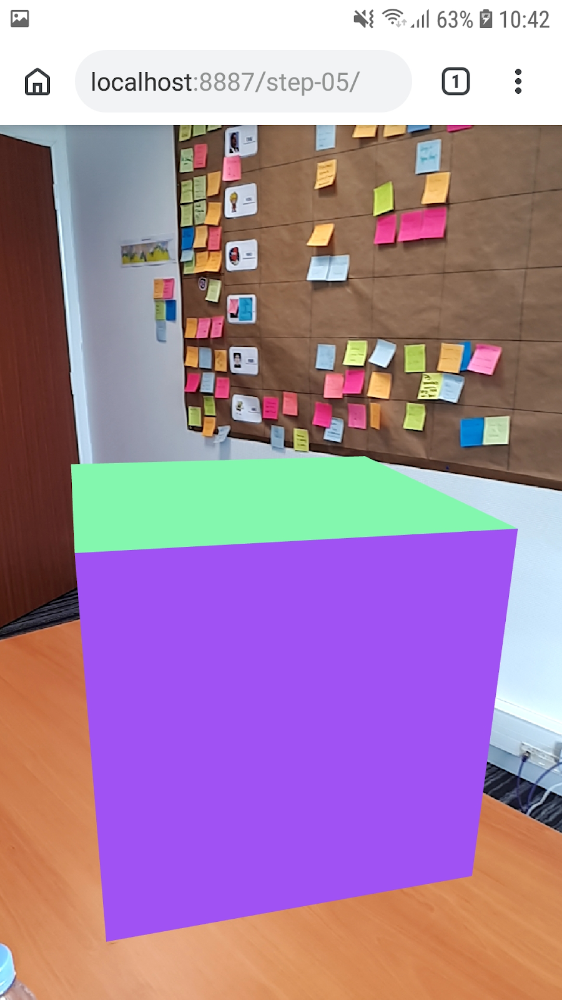

Ce codelab est un exemple pas à pas de conception d'une application web AR. Elle utilise JavaScript pour réaliser le rendu de modèles 3D qui apparaissent comme s'ils existaient dans la réalité.
Vous allez utiliser l'API en cours de développement WebXR, (l'API qui succède à l'API WebVR), qui combine les fonctionnalitées de la réalité augmentée (AR) et la réalité virtuelle (VR). Nous allons nous focaliser sur les extensions expérimentales AR de l'API WebXR Device qui sont en développement dans Chrome.
Quelques slides sont disponibles sur ce lien pour une explication de cette API : Slides
Qu'est-ce que la réalité augmentée?
La réalitée augmentée (AR) est un terme généralement utilisé pour décrire le mélange de graphiques générés par ordinateur avec le monde réel, ce qui, dans le cas de la réalité augmentée avec un téléphone, veut dire placer de manière convaincante un graphique générée par ordinateur au-dessus du flux vidéo de l'appareil photo. Pour que cet effet reste convaincant même quand le téléphone bouge, le téléphone doit connaître l'environnement dans lequel il évolue, c'est-à-dire détecter les surfaces et estimer l'éclairage ambiant. En complément, le téléphone doit également déterminer sa "position" et son "orientation" dans ces environnement réel en 3 dimensions.
L'usage de la réalité augmentée est en constante augmentation, et avec un usage grandissant dans des applications populaires comme les filtres de "selfies" ou de jeux AR. Aujourd'hui, le parc comprend des centaines de millions de téléphone compatibles avec la réalité augmentée, seulement un an après la sortie d'ARCore, la plateforme de réalité augmentée de Google, et ARKit d'Apple. Avec cette technologie maintenant dans les mains de millions de personne, les propositions d'extensions AR de l'API WebXR peuvent être implémentées derrière des drapeaux dans les navigateurs.
Ce que vous allez concevoir
|
Dans ce codelab, nous allons concevoir une application qui va vous permettre de prévisualiser des plats dans un restaurant, en plaçant au-dessus de votre assiette un modèle en utilisant la réalité augmentée. Votre application va :
|
Ce que vous allez apprendre
- Comment utiliser l'API WebXR
- Comment trouver une surface en utilisant les tests de collisions de la réalité augmentée
- Comment charger et afficher un modèle 3D synchronisé avec le flux vidéo de l'appareil photo
Ce codelab est focalisé sur les APIs de réalité augmentée. Les concepts externes et non pertinents ne seront pas expliqués ici et fournis tel quel dans le dépôt de code.
⚠ Ne fonctionne pas dans les dernières versions de Chrome Dev et Canary ⚠
L'API WebXR est en cours de développement et soumise régulièrement à des changements. Ce codelab a été testé avec la version 70-72 de Chrome Dev.
Ce dont vous avez besoin
Ceci est un aperçu de tout ce dont vous avez besoin, et nous verrons tout ceci en détail après :
- un PC de développement et un serveur local d'hébergement type Apache, nginx ou http-server (au travers de Node.js/npm)
- un téléphone compatible ARCore tournant sous Android 8.0 Oreo
- ARcore installé sur le téléphone (Chrome vous proposera de l'installer)
- Chrome Dev. Utilisez une version entre 70-72, et utilisez la version "Dev build" (les branchements ARCore ne sont pas encore livrés sur les versions beta/prod)
- Web Server pour Chrome, ou votre propre serveur web
- un câble USB reliant votre téléphone à votre PC
- l'exemple de code du codelab
- un éditeur de code
- des connaissances en HTML, CSS, JavaScript et Chrome Devtools
Obtenez Chrome et ses fonctionnalités AR
A l'heure de l'écriture de ce codelab, les fonctionnalités AR sont implémentées dans Chrome Dev à partir de la version 70.
Vous pouvez y accéder dans Paramètres -> A propos de Chrome et voir la version de Chrome que vous utilisez.
La version actuelle (74) de ChromeDev étant trop récente, veuillez installer Chrome Dev avec le lien ci-dessous :
- Chrome Dev : Chrome Dev 72.0.3626.14
L'apk est généralement en architecture armeabi-v7a.
S'assurer que les fonctionnalités AR sont activées dans Chrome
A l'heure de l'écriture de ce codelab, les fonctionnalités AR sont implémentées derrière les drapeaux webxr et webxr-hit-test. Pour activer le support de l'API WebXR dans Chrome :
- vérifiez que votre téléphone fonctionne bien sous Android 8.0 Oreo
- vérifiez que votre téléphone est bien compatible ARCore ici
- vérifiez que votre version de Chrome est entre 70 et 72
- tapez
chrome://flagsdans la barre d'adresse - tapez
webxrdans le champ de recherche des drapeaux - activez le drapeau WebXR Device API (
#webxr)
- note : ignorez le drapeau WebVR (
#enable-webvr)
- activez le drapeau WebXR Hit Test (
#webxr-hit-test) - redémarrez Chrome pour vous assurez que les drapeaux sont actifs

Visitez le lien ci-dessous sur votre téléphone pour essayer l'étape 1 du codelab. Si vous obtenez une page avec un message "Votre navigateur ne comporte pas les fonctionnalités AR", re-vérifiez la version de Chrome Canary et les drapeaux WebXR, qui requiert un redémarrage du navigateur.
Téléchargez le code source du codelab
Cliquez sur le lien ci-dessous pour téléchargez le code source du codelab sur votre PC :
Dé-zippez ce fichier. Vous allez obtenir un dossier (webxr-codelab), qui contient dans des
dossiers les différentes étapes du codelab, avec des ressources communes associées.
Les dossiers step-NN contiennent les sources pour les étapes correspondantes du codelab. Ils
sont là pour référence.
Nous allons démarrer le codelab avec le dossier work.
Installez et vérifiez votre serveur web
Vous êtes libre d'utiliser votre propre serveur web, mais nous allons voir ici comment utiliser Chrome Web Server si vous n'en avez pas un. Si vous n'avez pas cette application installée sur votre ordinateur, vous pouvez l'installer depuis le Chrome Web Store.
Après l'installation, cliquez sur le raccourci "Applications" dans un nouvel onglet Chrome.

Vous devriez voir apparaître cette fenêtre qui va vous permettre de configurer votre serveur local.

- cliquez sur le bouton choose folder, et sélectionnez le dossier
webxr-codelab. Cela va vous permettre d'héberger votre travail en cours de développement via une addresse mise en avant dans la fenêtre (dans la section Web Server URL(s)). - dans les options, vérifiez que Automatically show index.html est bien activée
- ARRÊTEZ et REDÉMARREZ le serveur en activant le bouton glissant

- Vérifiez qu'au moins une adresse apparaît :
- http://127.0.0.1:8887 — l'adresse par défaut localhost
Maintenant nous allons configurer votre téléphone afin qu'en visitant localhost:8887 vous
ayez accès au même port sur votre PC.
- sur votre PC, dans Chrome, saisissez dans votre barre d'adresse
chrome://inspectet cliquez sur le bouton Port forwarding...
Utilisez le paramètre Port forwarding settings pour transmettre le port 8887
vers localhost:8887. Vérifiez ensuite que l'option Enable port forwarding est
active.
Activez le mode développeur sous Android :
- rendez-vous dans les paramètres
- cliquez sur "A propos du téléphone"
- cliquez sur "Informations sur le logiciel"
- cliquez plusieurs fois sur le "Numéro de build" afin d'activer le mode développeur
Activez le débogage USB :
- rendez-vous dans les paramètres
- cliquez sur "Options de développement"
- activez l'option "Débogage USB"
Testez votre connection :
- connectez votre téléphone à votre PC avec votre câble USB
- sur votre téléphone, saisissez
http://localhost:8887dans la barre d'adresse. - sur votre téléphone, cliquez sur le dossier
workpour chargez la pagework/index.html
|
Vous devez normalement voir cette page... |
...sinon, vérifiez la version de Chrome Canary, les drapeaux dans |
Une fois la connecton opérationnelle, cliquez sur le bouton "Entrez dans l'expérience de réalité augmentée". Il vous sera proposé d'installer ARCore.
La première fois que vous lancez une application web AR, une boît de dialogue concernant les autorisations d'accès à votre appareil photo apparaîtra.
|
|

Une fois que tout fonctionne bien, vous devriez voir une scène avec des cubes surplombant le flux vidéo de votre appareil photo. La compréhension de l‘environnement s'améliore à mesure que vous vous déplacez et bougez votre téléphone, cela aide à stabiliser les choses.
Histoire
WebGL est librairie graphique puissante permettant le rendu de contenu 3D dans un navigateur web, mais l'accès aux périphériques VR est nécessaire pour connaître et se synchroniser avec la fréquence d'affichage des écrans. L'API expérimentale WebVR 1.1 a été implémentée dans les navigateurs au fur et à mesure que les développeurs construisaient des application VR pour le web. Cela a posé les bases permettant le rendu stéréoscopique de scène web avec les distorsions appropriées aux casques VR. Les périphériques compatibles Daydream et GearVR mais aussi les périphériques comme l'Oculus Rift ou HTC Vive sont ceux supportés par la majorité des navigateurs.
Les cas d'usages évoluant, le support de l'AR dans le web devint une nécessité. A cause d'une grande similarité entre les technologies AR et VR, l'API WebXR fut créée pour englober et supporter ces 2 domaines. Malgré son statut en cours de développement et donc sujette à des changements, le coeur de l'API est stable, et est en cours de développement et d'implémentation par la majorité des éditeurs de navigateurs web. L'API supporte les expériences VR, et les propositions initiales AR sont en cours de prototypages et d'exploration.
Implémentation
La première implémentation de l'API WebXR est disponible dans Chrome depuis la version 67 derrière un
drapeau (#webxr) mais aussi sur une "origin trial". Les fonctions AR initiales sont disponibles dans Chrome
depuis la version 70 derrière un drapeau (#webxr-hit-test). A l'heure de l'écriture de ce
codelab, la majorité des navigateurs web supportant l'API WebVR ont assurés de leur support dans le futur
de l'API WebXR.
Le futur
La seule fonctionnalité de compréhension d'une scène actuellement disponible dans un navigateur est le "test de collision". Cela permet "to cast a ray out from the device", c'est-à-dire, à partir d'un tapotement de doigt sur l'écran, de retourner les coordonnées des collisions découvertes dans le monde réel, nous donnant la possibilité d'utiliser ces informations pour afficher des couches virtuelles.
Les explorations futures permettront une meilleure compréhension des scènes, comme l'estimation de luminosité, des surfaces, nuages de points etc.
Placez-vous dans le dossier de travail work.
Nous vous fournissons une base de travail avec une page HTML, du style CSS et un fichier JavaScript. Cette base vous permet également d'activer les fonctionnalités AR d'affichage et de rendu en synchro avec la position du téléphone.
La page HTML
Nous allons concevoir une expérience AR avec une page web traditionnelle en utilisant les technologies web.
Dans cette expérience, nous allons utiliser une canvas en plein écran, notre page HTML n'a donc pas besoin
d'une grande complexité de code. La partie CSS s'assure que notre <canvas> injecté
par notre librairie graphique est bien en plein écran.
Les fonctionnalités AR requiert une interaction utilisateur minium de type gestuelle pour démarrer, nous utilisons donc certains éléments Material Design Lite pour afficher un bouton "Démarrez l'expérience" ou un message de "non support" du navigateur.
La page index.html qui se trouve dans le dossier work doit ressembler à cela. (Ceci
est un exemple de code, préférez le code venant du dépôt Github qui sera peut-être plus à jour, ne copiez pas
ce code dans votre fichier):
<!DOCTYPE html>
<html>
<head>
<meta charset="utf-8">
<meta http-equiv="X-UA-Compatible" content="IE=edge">
<meta name="viewport" content="width=device-width, initial-scale=1.0">
<title>Building an augmented reality application with the WebXR Device API</title>
<link rel="stylesheet" type="text/css" href="../shared/app.css">
<link rel="stylesheet" type="text/css" href="../third_party/mdl/material.min.css">
</head>
<body>
<div id="enter-ar-info" class="demo-card mdl-card mdl-shadow--4dp">
<!-- Material Design elements for demo -->
<!-- ... -->
</div>
<script src="../third_party/three.js/three.js"></script>
<script src="../shared/utils.js"></script>
<script src="app.js"></script>
</body>
</html>Découvrez la base de code JavaScript
Notre application est un mélange d'utilisation de la librairie 3D JavaScript three.js, quelques fonctions utilitaires et du code spécifique WebXR dans app.js.
Découvrons en détail de squelette de code.
Votre dossier work contient un fichier app.js dans lequel vous allez trouver la classe App
:
class App {
constructor() {
...
}
async init() {
...
}
async onEnterAR() {
...
}
onNoXRDevice() {
...
}
async onSessionStarted(session) {
...
}
onXRFrame(time, frame) {
...
}
};
window.app = new App();Nous instancions notre application et la stockons dans window.app par facilité pour le débogage
avec Chrome DevTools.
Notre constructeur appelle this.init() qui est une fonction async qui va démarrer notre session
XRSession pour
travailler en AR.
Cette fonction vérifie l'existence de navigator.xr, le point d'entrée de l'API WebXR,
mais aussi de la présence de XRSession.prototype.requestHitTest, la fonctionnalité AR activée par
le drapeau Chrome webxr-hit-test.
- si les 2 objets existent, nous pouvons demander la mise à disposition du device, via
navigator.xr.requestDevice()qui retourne une promesse qui renvoie une XRDevice, ou sinon échoue si non trouvé. - si un des 2 objets n'existent pas, nous appelons la méthode
this.onNoXRDevice()qui affiche un message de "non support AR" à l'utilisateur.
Si tout va bien, nous connectons le click du bouton pour tenter de créer ensuite une session XR avec un écouteur de click.
class App {
...
async init() {
if (navigator.xr && XRSession.prototype.requestHitTest) {
try {
this.device = await navigator.xr.requestDevice();
} catch (e) {
this.onNoXRDevice();
return;
}
} else {
this.onNoXRDevice();
return;
}
document.querySelector('#enter-ar').addEventListener('click', this.onEnterAR);
}
}Quand nous avons détecté une XRDevice, nous la stockons dans la propriété this.device.
Dans le but d'interagir avec ce périphérique, nous devons lui demander une XRSession. Une XRDevice peut
avoir plusieurs XRSessions, dans chaque session est exposé la position du périphérique, l'environnement de
l'utilisateur et gère le rendu du périphérique.
Nous voulons que la sortie de cette session soit affichée dans notre page, nous devons donc créer un XRPresentationContext,
similaire à un contexte WebGL WebGLRenderingContext si nous faisions nous même directement un
rendu WebGL.
class App {
...
async onEnterAR() {
const outputCanvas = document.createElement('canvas');
const ctx = outputCanvas.getContext('xrpresent');
try {
const session = await this.device.requestSession({
outputContext: ctx,
environmentIntegration: true,
});
document.body.appendChild(outputCanvas);
this.onSessionStarted(session);
} catch (e) {
this.onNoXRDevice();
}
}
}En appelant getContext(‘xrpresent') sur notre canvas, cela va nous renvoyer un XRPresentationContext,
qui est le contexte dans lequel le rendu de notre périphérique AR va être affiché. Ensuite nous demandons une
session via requestSession() sur notre périphérique XR avec notre contexte de présentation, en
ajoutant le drapeau environmentIntegration indiquant que nous voulons les fonctionnalités AR, et
nous attendons la résolution de la promesse.
- si elle est résolue, nous ajoutons le canvas au DOM et appelons notre méthode
this.onSessionStarted()avec notre nouvelle session XRSession. - si elle échoue, nous affichons notre message d'erreur avec la méthode
this.onNoXRDevice()
Dès que nous avons notre XRSession, nous sommes prêt à mettre en place le rendu avec three.js et lancer notre boucle de rendu. Nous créons un WebGLRenderer three.js, qui va
contenir notre second canvas, en s'assurant que les options alpha et preserveDrawingBuffer
sont activées. Nous utilisons le WebGLRederingContext venant de three.js et de manière asynchrone activons le
périphérique XR
compatible. Une fois le contexte considéré comme compatible avec le périphérique, nous pouvons créer une
couche XRWebGLLayer,
et le mettre en place comme baseLayer de de notre XRSession. Cela dit à notre session que nous
voulons utiliser ce contexte pour dessiner notre scène, qui va indirectement être affichée dans le canvas créé
dans this.init(), mélanger avec le flux de notre caméra photo.
Pour dessiner une scène three.js nous avons besoin de 3 composants : un WebGLRenderer pour gérer le rendu, une
scène contenant des objets à afficher, et une caméra pour indiquer la perspective avec laquelle la scène doit
être affichée. Nous allons utiliser une scène créée à partir de DemoUtils.createCubeScene() pour
pré-remplir la scène avec des cubes flottant dans l'espace. Si vous n'avez pas travailler avec three.js
ou WebGL avant, pas de soucis ! Si vous avez des problèmes de rendu, comparer votre code avec les examples.
Avant que nous démarrions notre boucle de rendu, nous avons besoin d'obtenir une trame de référence XRFrameOfReference
avec la valeur ‘eye-level', indiquant que notre périphérique est en train de suivre sa
position (en comparaison d'expériences travaillant avec l'orientation comme DayDream ou GearVR). Une
fois que nous avons notre trame de référence, nous pouvons utiliser la méthode requestAnimationFrame
de notre XRSession pour démarrer notre boucle de rendu, de manière similaire à window.requestAnimationFrame.
class App {
...
async onSessionStarted(session) {
this.session = session;
document.body.classList.add('ar');
this.renderer = new THREE.WebGLRenderer({
alpha: true,
preserveDrawingBuffer: true,
});
this.renderer.autoClear = false;
this.gl = this.renderer.getContext();
await this.gl.setCompatibleXRDevice(this.session.device);
this.session.baseLayer = new XRWebGLLayer(this.session, this.gl);
this.scene = DemoUtils.createCubeScene();
this.camera = new THREE.PerspectiveCamera();
this.camera.matrixAutoUpdate = false;
this.frameOfRef = await this.session.requestFrameOfReference('eye-level');
this.session.requestAnimationFrame(this.onXRFrame);
}
}Sur chaque image, this.onXRFrame est appelée avec un timestamp et une XRPresentationFrame. De notre objet frame, nous obtenons un objet XRDevicePose, qui décrit la position et l'orientation dans l'espace, et un
tableau de vues XRViews, qui décrivent chaque point de vue à partir desquels nous devons dessiner la scène pour
afficher correctement et dans le bon ordre les choses sur le périphérique.
Premièrement, nous devons récupérer la position courante et s'inscrire dans la file d'attente
d'animation en appelant session.requestAnimationFrame(this.onXRFrame) avant que nous fassions
un rendu. Les rendus stéréoscopique VR ont 2 vues (une pour chaque oeil), nous allons seulement afficher une
vue comme nous affichons une expérience AR plein écran. Pour faire le rendu, nous allons boucler sur chaque vue
et mettre en place la caméra en utilisant une matrice de projection en fonction des données de positionnement
fournis. Cela synchronise la position virtuelle de la caméra et son orientation avec la position/orientation
physique estimée de notre périphérique. Ensuite nous pouvons dire à notre renderer de faire le rendu de la
scène avec la caméra appropriée.
class App {
...
onXRFrame(time, frame) {
const session = frame.session;
const pose = frame.getDevicePose(this.frameOfRef);
session.requestAnimationFrame(this.onXRFrame);
this.gl.bindFramebuffer(this.gl.FRAMEBUFFER, this.session.baseLayer.framebuffer);
if (pose) {
for (let view of frame.views) {
const viewport = session.baseLayer.getViewport(view);
this.renderer.setSize(viewport.width, viewport.height);
this.camera.projectionMatrix.fromArray(view.projectionMatrix);
const viewMatrix = new THREE.Matrix4().fromArray(pose.getViewMatrix(view));
this.camera.matrix.getInverse(viewMatrix);
this.camera.updateMatrixWorld(true);
this.renderer.clearDepth();
this.renderer.render(this.scene, this.camera);
}
}
}
}Et c'est tout... ;)
Nous avons parcouru le code permettant :
- récupérer un périphérique XRDevice
- créer une session
- faire le rendu de la scène sur chaque image
- mettre à jour la position de notre caméra virtuelle avec la position physique estimée du périphérique
Testez votre code
Maintenant que nous avons parcouru ce squelette, découvrons le en action. Vous devriez voir le flux de votre caméra avec des cubes flottant dans l'espace et dont la perspective changent quand vous vous déplacez. Le tracking s'améliore au fur et à mesure que vous vous déplacez dans l'espace.
Si vous avez le moindre problème à cette étape, relisez les parties "Introduction" et "Mise en place".
Maintenant que nous avons notre flux vidéo de notre caméra, la position de notre périphérique et la position de la caméra et son orientation, et que nous affichons des cubes par-dessus, il est temps de commencer à interagir avec le monde réel en utilisant le "test de collision". Nous voulons être capable de trouver une surface dans le monde réel, et de place un cube à cet endroit.
Qu'est ce qu'un "test de collision" ?
A "test de collision" est généralement un moyen de vérifier qu'en traçant une ligne d'un point de départ dans l'espace avec une certaine direction, nous pouvons déterminer si cette ligne interagit avec des objets qui nous intéresse. Dans notre cas, nous allons tapper sur l'écran de notre périphérique AR, donc il faut imaginer cette ligne partant de votre doigt, au travers de votre écran et parcourant le monde physique devant vous, monde que vous voyez au travers de votre écran à l'aide de la caméra.
L'API WebXR va nous dire si cette ligne croise des objets du monde réel, ceci en utilisant des capacités AR.
La magie opère ici au travers des SDK ARCore (Google) et ARKit (Apple). L'API WebXR contient en fait des branchements en natif vers ces SDK intégrés dans les sources des navigateurs, pour l'instant ARCore pour Google Chrome.
Mise en place de la scène
Nous allons ajouter une div dans la page index.html avec l'ID stabilization pour
afficher une animation à l'utilisateur représentant un statut de stabilisation, lui demandant donc de
bouger son téléphone. Cette animation sera affichée une fois en mode AR, et cachée dès que des surfaces auront
été trouvées.
<div id="stabilization"></div>
<script src="../third_party/three.js/three.js"></script>
...
</body>
</html>Maintenant dans notre fichier app.js, la première chose à faire est de supprimer nos cubes flottants. Dans la
fonction onSessionStarted, remplacez DemoUtils.createCubeScene() par new THREE.Scene().
// this.scene = DemoUtils.createCubeScene();
this.scene = new THREE.Scene();Juste après la création de la scène, nous avons besoin de créer un objet à placer durant notre future
collision. Les objets à afficher en three.js sont représentés par des objets THREE.Mesh, qui
contient une géométrie et un matériau. Voici le code pour créer cette géométrie et ce matériau, avec en même
temps la
transformation de notre cube pour que son origine soit sa face inférieure. Dès maintenant, nous avons juste
créé le mesh, l'avons modifié et stocké dans this.model.
const geometry = new THREE.BoxBufferGeometry(0.5, 0.5, 0.5);
const material = new THREE.MeshNormalMaterial();
geometry.applyMatrix(new THREE.Matrix4().makeTranslation(0, 0.25, 0));
this.model = new THREE.Mesh(geometry, material);Nous allons également fournir un objet three.js Reticle (le code source de création est dans
shared/utils.js) qui va continuellement rechercher des hit-tests au centre de l'écran, pour
fournir un retour visuel à l'utilisateur à propos de la compréhension du monde réel faite par le
périphérique. Nous ajoutons le constructeur dans la fonction onSessionStarted après avoir récupéré
la frame de référence. Dans notre fonction onXRFrame, nous appelons la méthode update du Reticle,
et ajoutons la classe stabilized au body de la page dès que le reticle à trouver une surface. Cela
cache également l'animation d'aide de l'utilisateur.
class App {
...
onSessionStarted(session) {
...
this.reticle = new Reticle(this.session, this.camera);
this.scene.add(this.reticle);
this.frameOfRef = await this.session.requestFrameOfReference('eye-level');
this.session.requestAnimationFrame(this.onXRFrame);
...
}
onXRFrame(time, frame) {
let session = frame.session;
let pose = frame.getDevicePose(this.frameOfRef);
this.reticle.update(this.frameOfRef);
if (this.reticle.visible && !this.stabilized) {
this.stabilized = true;
document.body.classList.add('stabilized');
}
...
}
}Nous voulons maintenant réaliser cete opération de hit-testing seulement sur une action utilisateur, une tap sur l'écran par exemple, ajoutons donc un écouteur sur cet évènement :
- dans le constructeur, attachons la méthode de callback du click sur l'instance
- écoutons l'évènement click à la fin de la méthode
onSessionStarted, pour s'assurer que tout est supporté. - finalement, ajoutons une méthode de classe vide de callback du click,
onClick
class App {
constructor() {
...
this.onClick = this.onClick.bind(this);
}
onSessionStarted(session) {
...
this.reticle = new Reticle(this.session, this.camera);
this.scene.add(this.reticle);
window.addEventListener('click', this.onClick);
}
onClick(e) {
console.log('click!');
}
}Vérifiez maintenant votre application, en s'assurant dans Chrome Devtools que le log apparaît bien. Ce tutorial peut vous aider à mettre en place le débogage à distance d'un périqphérique Android : https://developers.google.com/web/tools/chrome-devtools/remote-debugging/
Déclencher le test de collision
Maintenant que nous avons toute la mécanique pour le click et notre modèle 3D, il est temps de réaliser le
test de collision. L'API XRSession demande un point d'origine, une direction et la XRFrameOfReference
créée auparavant. Notre point d'origine est la position du périphérique dans le système de coordonnées
WebXR, et la direction est un vecteur de point partant de l'arrière de notre périphérique. three.js a des
fonctions utilitaires pour projeter un vecteur depuis un point, alors utilisons les. Cela peut paraître
compliqué pour ceux qui ne sont pas familier avec les matrices et les vecteurs, mais la chose la plus
importante ici est de comprendre que cela va générer une ligne partant de l'arrière de votr téléphone. Nous
pouvons utiliser un raycatser de three.js pour réaliser tout les calculs mathématiques, ce qui nous donne une
origine et un vecteur de type THREE.Vectors3. Les positions x et y dans setFromCamera
est la position dans l'espace de l'écran, et cette fonction prend des valeurs dans des coordonnées
normalisées entre -1et 1. Come nous voulons tenter de placer un objet au milieu de l'écran, nos valeurs x
et y sont juste 0.
La méthode requestHitTest retourne une promesse qui est résolue avec un tableau de XRHitResults,
qui contient des matrices des positions ou des collisions ont eu lieu. Si notre ligne sortant de notre
périphérique rencontre un mur ou le sol, la position de collision sera où cette ligne à croiser ce mur ou ce
sol. Si nous trouvons une collision, nous prenons le premier (le plus proche) et le convertissons en THREE.Matrix4.
Ensuite nous prenons le cube créé précédemment et le plaçons à la position de collision. Nous nous assurons
aussi que le cube est ajouté à la scène pour qu'il soit affiché. Comme maintenant nous devons utiliser
await dans onClick, nous rendons onClick async.
class App {
...
async onClick(e) {
const x = 0;
const y = 0;
this.raycaster = this.raycaster || new THREE.Raycaster();
this.raycaster.setFromCamera({ x, y }, this.camera);
const ray = this.raycaster.ray;
const origin = new Float32Array(ray.origin.toArray());
const direction = new Float32Array(ray.direction.toArray());
const hits = await this.session.requestHitTest(origin,
direction,
this.frameOfRef);
if (hits.length) {
const hit = hits[0];
const hitMatrix = new THREE.Matrix4().fromArray(hit.hitMatrix);
this.model.position.setFromMatrixPosition(hitMatrix);
this.scene.add(this.model);
}
}
}A ce point du codelab, nous avons gérer une interaction utilisateur, déclencher un test de collision. La sous-couche AR de Chrome, ARCore est capable de détecter des surfaces horizontales ou verticales.
Testez votre code
- quand vous lancez votre application, vous devez pouvoir voir le reticle de recherche de surface. Sinon, déplacez votre téléphone.
- dès que vous voyez un reticle, en tapant vous devriez voir un cube placé à cet endroit
- en vous déplaçant, la couche ARCore détectera plus facilement les surfaces
- si vous rencontrez le moindre problème, vérifiez le code du dossier step-05/app.js

Nous avons maintenant mis en place la plupart de la mécanique de notre application. Il est très sympa
d'arriver à afficher des cubes mais nous pouvons sûrement faire mieux. Nous allons maintenant afficher un
vrai modèle 3D provenant de Poly, une collection
d'objets 3D proposés par des artistes, sous license CC-BY. Plusieurs modèles sont à disposition dans le dossier assets.
Rajoutons d'abord une référence concernant la license dans la page. Nous créons pour cela une div #info et ajoutons quelques informations sur la license :
<div id="stabilization"></div>
<div id="info">
<span>
Modèle 3D sous licence <a href="https://creativecommons.org/licenses/by/2.0/">CC-BY</a>
</span><br />
</div>
<script src="../third_party/three.js/three.js"></script>
...
</body>
</html>Chargement de fichiers OBJ et MTL
Avant que nous commencions, nous allons utiliser des chargeurs de three.js : OBJLoader pour le modèle et MTLLoader pour les matériaux. Ces chargeurs ne sont pas inclus dans three.js, mais
fournis séparément. Vous en avez une copie dans le dossier third_party/three.js, donc ajoutons les
à notre page. Faites bien attention de les ajouter après three.js et avant
app.js :
<html>
...
<body>
...
<script src="../third_party/three.js/three.js"></script>
<script src="../third_party/three.js/OBJLoader.js"></script>
<script src="../third_party/three.js/MTLLoader.js"></script>
<script src="../shared/utils.js"></script>
<script src="app.js"></script>
</body>
</html>Ajoutons des constantes référençant notre modèle au début de app.js.
const MODEL_OBJ_URL = '../assets/muffin/muffin.obj';
const MODEL_MTL_URL = '../assets/muffin/muffin.mtl';
const MODEL_SCALE = 0.1;Maintenant, nous pouvons revenir à notre fonction onSessionStarted. Nous devons ajouter des
lumières à notre scène three.js et charger notre modèle. Utilisons la fonction DemoUtils.createLitScene()
qui va créer une scène THREE.Scene pour nous avec des lumières déjà incluses. Ensuite, utilisons
un autre utilitaire, DemoUtils.loadModel(), qui utilise OBJLoader et MTLLoader que nous avons
inclus précédemment. Cela retourne une promesse résolue avec le modèle en tant qu'objet three.js, indiquant
que le chargement est terminé, mais notez que nous n'utilisons pas await car nous voulons continuer le
rendu pendant le chargement du modèle. Dès que le modèle est chargé, nous le stockons dans this.model.
async onSessionStarted(session) {
...
// this.scene = new THREE.Scene();
this.scene = DemoUtils.createLitScene();
// We no longer need our cube model.
// Sorry, cube!
/*
const geometry = new THREE.BoxBufferGeometry(0.5, 0.5, 0.5);
const material = new THREE.MeshBasicMaterial();
geometry.applyMatrix(new THREE.Matrix4().makeTranslation(0, 0.25, 0));
this.model = new THREE.Mesh(geometry, material);
*/
DemoUtils.loadModel(MODEL_OBJ_URL, MODEL_MTL_URL).then(model => {
this.model = model;
this.model.scale.set(MODEL_SCALE, MODEL_SCALE, MODEL_SCALE);
});
...
}Placement de notre modèle
Nous y sommes presque. La fonction de test de collision va placer this.model que nous avons remplacé par un modèle 3D maintenant, mais il reste quelques trucs à faire pour affiner tout ça. Dans le callback onClick, comme notre modèle est chargé de manière asynchrone, nous pourrions arriver dans un cas où nous l'afficherions avant qu'il soit chargé. Ajoutons un contrôle en début de fonction si this.model n'existe pas.
async onClick(e) {
if (!this.model) {
return;
}
...
}Testez votre code
Maintenant vous devriez voir en tapant sur votre écran votre modèle apparaître sur la surface détectée.
Si vous rencontrez le moindre problème, vérifiez le code du dossier final/app.js
En changeant de loader, nous pouvons charger facilement un modèle 3D animé. Nous allons utilisé un loader de
fichier GLTF, disponible dans le dossier third_party/three.js.
<html>
...
<body>
...
<script src="../third_party/three.js/three.js"></script>
<script src="../third_party/three.js/GLTFLoader.js"></script>
<script src="../shared/utils.js"></script>
<script src="app.js"></script>
</body>
</html>Dans votre fichier app.js, il faut modifier la référence vers le fichier gltf.
const MODEL_NAME = 'stormtrooper';
const MODEL_GLTF_URL = `../assets/${MODEL_NAME}/${MODEL_NAME}.gltf`;
const MODEL_SCALE = 0.25;Pour animer notre modèle lors du rendu, nous allons instancier une référence à une horloge three.js et un
mixer. Ce mixer servira à jouer l'animation stockée dans le modèle, il sera instancié dans l'appel de
la méthode loadGltfModel.
const clock = new THREE.Clock();
let mixer = null;Dans la méthode onSessionStarted, remplacez l'appel de la méthode loadModel par
loadGltfModel
DemoUtils.loadGltfModel(MODEL_GLTF_URL).then(model => {
this.model = model;
// Every model is different -- you may have to adjust the scale
// of a model depending on the use.
this.model.scale.set(MODEL_SCALE, MODEL_SCALE, MODEL_SCALE);
});Enfin, dans la méthode onXRFrame, nous allons lancer le rafraîchissement du mixer three.js avec
l'horloge.
this.gl.bindFramebuffer(this.gl.FRAMEBUFFER, this.session.baseLayer.framebuffer);
if (mixer) mixer.update(clock.getDelta());
if (pose) {
Testez votre code
Maintenant vous devriez voir en tapant sur votre écran un modèle de Stormtrooper apparaître sur la surface détectée.
Si vous rencontrez le moindre problème, vérifiez le code du dossier bonus/app.js
Nous avons maintenant nos gâteaux chargés et affichés sur une surface dans le monde réel, avec des ombres. La
méthode requestHitTest de l'API WebXR est la première méthode implémentée permettant la
compréhension du monde réel, mais dans le futur, il sera possible de mesurer la lumière ambiante, les surfaces
et les informations de profondeur, mais aussi des nuages de points par exemple.
Ces capacités vous nous permettre d'intégrer encore plus facilement nos objets dans le monde réel. Par exemple, l'estimation de lumière va s'accorder avec les ombres du modèles dans le monde réel, et les données de profondeur nous donnerons la possibilité de cacher des objets numériques quand certains objets réels seront en face. Ce qui reste en cours de spécification dans l'API WebXR est la notion d'ancres, avec la possibilité de suivre des objets du monde réel et plus précisément la position d'objets dans une scène.
Crédits additionnels : choisissez votre propre modèle
Vous pouvez trouver d'autres modèles sur les sites : Poly et SketchFab.